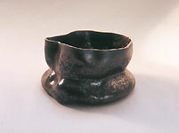
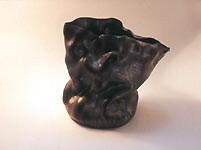
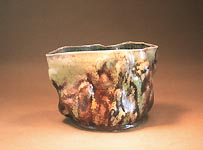
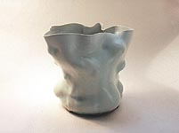

| Georgette
Ore and Rascal Ware
An excerpt from The Peedmont Press, Style Section,
January 10, 2001
by Donald B. Woofin

This is the first chapter in a series of articles by Don Pilcher
on some of the characters that have been inspiring him and helping
him with creating his ceramic works. Feedback is welcome: Don Pilcher:
.
Georgette Ore and Rascal Ware - Chapter 1
Georgette Ore is vague about her age and her past except to say
that she was born in the South and grew up on the Gulf. A guess
puts her somewhere between middle age and early retirement, depending
on the light and the time of day.
She has worked in the pottery field for some time, moving frequently
and living an artist’s life as America’s perpetual guest.
Ms. Ore explains that the recent bent of her pottery has been inspired
by a line from the classic motion picture, The Graduate,
wherein it is suggested to Benjamin that the future is in plastics.
She treats her clay as if it were plastic; heated and malleable.
Her pottery appears off handed and, to some eyes, even inept. Yet
upon careful examination it is clear that each vessel begins as
an exquisitely wheel thrown piece of work which is then animated
and transformed by the power of her imagination and her wily fingers.

Ms. Ore has remained single, but admits to having a fondness for
her new employer, Junior Bucks. They met on the Internet in a feldspar
chat room.
Mr. Bucks founded the Rascal Ware Pottery several years ago. To
date, this venture has enjoyed no particular success. He recently
hired Ms. Ore in an attempt to turn Rascal Ware into “well…something
desirable”. As to her inspiration concerning “plastics”,
Mr. Bucks says that while this may be true, he himself has noticed
a profound change in Ms. Ore’s work since she began taking
a prescribed medication on a daily basis. He also reports that she
no longer complains about the heat in the studio. Good thing, that.
Always a gentleman, Mr.Bucks has no comment on her wily fingers.
Ms. Ore has been asked if she knows of, or is related to, the famous
American potter, George Ohr. She says that one side of her family
has a legend that there is a connection between the Ores and the
Ohrs. The discrepancy in spelling is attributed to the Immigration
Service, an alcohol treatment sanitarium, or unregulated voting
practices in a large rural county, all depending on who is telling
the story. At best, she figures she could be a grand niece, once
removed by a second marriage. Nothing to brag on there. Commenting
on the similarities of their pottery, she observes that Rascal Ware
is to George Ohr as Twain is to Poe. She won’t elaborate further.

As to a life spent in the art pottery business, she thinks that
it is wonderful, but more complex and demanding than most people
recognize. “After all”, she says, “you can’t
really tell the difference between the theory of the post-modern
narrative and a good practical joke. Maybe there is no difference.
It’s just too ironic. Young artists and potters are drawn
to irony because it often signifies real content. But after you’ve
lived enough of it, you run the other way, because irony can also
suggest that the hand of God has been dealing from the bottom of
the deck. That’s an unpleasant thought; it tests my theology,
breaks my heart and gives me a headache. I’m better off sticking
with plastic clay and my wily fingers”.
Ms. Ore averts her eyes when she talks about irony. One is left
to wonder if she intends to stick with Mr. Bucks.
continue...
About Don Pilcher: American studio potter and author.
Pilcher earned a BFA at the Chouinard Art Institute in Los Angeles
in 1964 and an MFA at the Rhode Island School of Design in 1966.
He taught at the University of Illinois at Urbana-Champaign from
1966-99, where he is now Professor Emeritus. He makes wheel-thrown
and altered functional ware. Images & text ©
Don Pilcher. Contact:
.
Rascal
Ware Chapter 1/Español
Rascal Ware Chapter 2/Español
Rascal Ware Chapter 3
Rascal Ware Chapter 4
Rascal Ware Chapter 5
Rascal Ware Chapter 6
More Articles
|
{kind=link}
{kind=link}
{kind=link}
{kind=link}